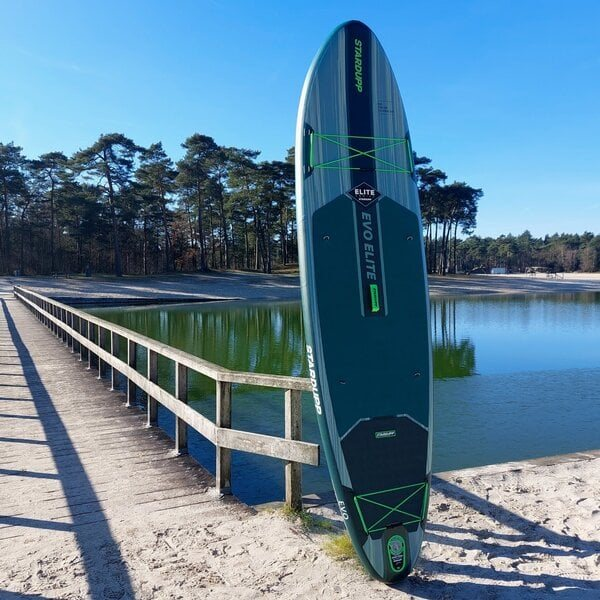
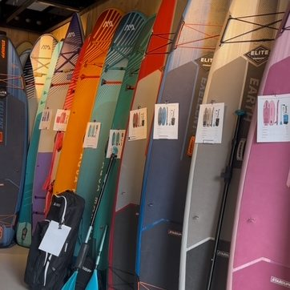
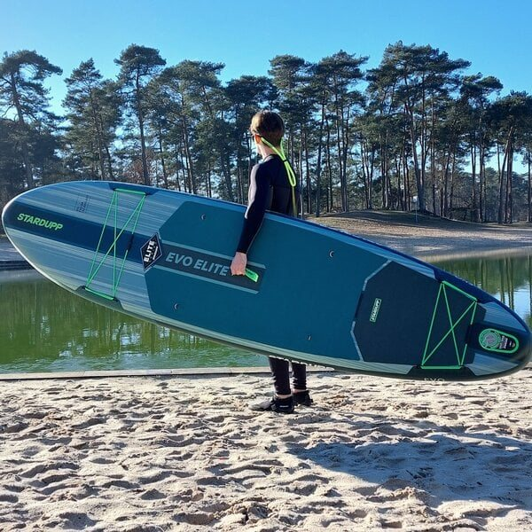

SUP huren in Haarlem
Even offline. Zin om samen iets écht leuks te beleven? Huur een SUP bij TRIBE en vaar relaxed door het Spaarne, ontdek verborgen plekjes van Haarlem vanaf het water.


Geen haast, geen planning. Gewoon het water op.
Met vrienden, je gezin, kinderen of lekker met z'n tweeën: even weg van de drukte, telefoons op stil en genieten van zon, water en de stad om je heen.
Onze hoogwaardige StartUpp Elite SUP's zijn stabiel, licht en geschikt voor beginners én ervaren suppers. Liever ontspannen zitten? Binnen een handomdraai verander je jouw SUP in een comfortabele kajak. Zelfs je hond kan gezellig mee.

Alles voor een dag op het water
Off the grid
Even weg van de drukte, telefoon op stil. Met vrienden, gezin, kinderen of gewoon met z'n tweeën.
SUP of kajak
Ruimte voor 2 personen per board, maar ook perfect solo. Reddingsvesten zijn beschikbaar.
Het Spaarne op
Ontdek verborgen plekjes van Haarlem vanaf het water, sportief of rustig dobberend in de zon.
Tarieven
Perfect voor een middagje suppen.
De hele dag de vrijheid om Haarlem op je eigen manier te beleven.